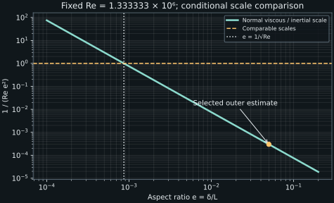

8. Thin boundary layers and outer scaling
A small coefficient multiplying viscosity does not make viscosity uniformly negligible. Close to a no-slip wall, velocity changes over a short distance, and the resulting derivatives can compensate for that small coefficient. Turbulent boundary layers add another momentum flux—the covariance of the fluctuations—so deciding which terms matter requires both a geometric scale and a statistical scale. A dominant balance is a conditional conclusion from those scales.
Lessons 21–23 introduce wall boundary conditions, the small-viscosity argument, stationary planar RANS, and a scale analysis using separate mean-speed and velocity-change scales. We reconstruct each estimate, explain the additional assumptions behind the selected balance, and separate an order relation from a measured growth law. No profile or transition threshold is obtained from these estimates alone.
8.1 Walls are important to this problem, but do not define all turbulence L21 · 00:19
For a stationary impermeable solid boundary, no penetration requires the normal velocity to vanish. No slip requires the tangential fluid velocity to match the wall velocity, here zero. These are different components of the boundary condition. For a deterministically moving wall, write the same conditions for velocity relative to the wall. After Reynolds decomposition, fluctuations vanish at a smooth no-slip wall whose motion is common to the ensemble.
A wall can generate and influence vorticity through viscous stresses and the boundary conditions. In a simple parallel shear \(u=(U(y),0,0)\), vorticity \(\boldsymbol\omega=\nabla\times\boldsymbol u\) has \(\omega_z=-dU/dy\). Jets issuing from nozzles and wakes behind solid bodies inherit vorticity from their formation near surfaces; a downstream free shear layer can therefore remain affected by its upstream apparatus even when no wall touches the region being studied.
These examples do not prove that a wall or density stratification is required for turbulence in every mathematical or physical setting. The constant-density incompressible vorticity equation, with body acceleration \(\boldsymbol f\), is
Existing vorticity can be advected, stretched and diffused without a wall in the domain. A rotational forcing can supply it. The Johns Hopkins forced isotropic dataset description, p. 1, documents turbulent flow in a periodic domain with energy injected into large spatial scales. That provides a concrete counterexample to a universal wall-or-stratification requirement. We cite the documented setup, not a new analysis of its data.
Likewise, nonzero three-dimensional vorticity fluctuations are useful information about a velocity field, but are not alone a sufficient test for turbulence. An ensemble of smooth organized time-dependent vortical motions can have such fluctuations without the multiscale irregular dynamics normally intended by turbulence. Nor is every random signal a turbulent flow. In this course, wall shear, component statistics, spatial organization and energy transfer provide complementary descriptions. We will use the boundary-layer assumptions to analyze a particular class of turbulent flows rather than convert them into universal existence criteria.
8.2 The small-viscosity limit is not uniform at a wall L21 · 10:10
Choose a positive outer velocity \(U_s\), streamwise length \(L\), and scales \(L/U_s\) for time and \(\rho U_s^2\) for pressure. Define \(\widehat x_i=x_i/L\), \(\widehat t=tU_s/L\), \(\widehat u_i=u_i/U_s\), and \(\widehat p=(p-p_{\rm ref})/(\rho U_s^2)\), where \(p_{\rm ref}\) is an arbitrary constant reference. The unforced constant-property incompressible equations become
If all dimensionless derivatives stay of order one as \(\mathrm{Re}_L\) becomes large, the viscous acceleration is small relative to the inertial scale \(U_s^2/L\). The inviscid outer equation is then a useful leading approximation. But that “if” fails when the solution develops a short wall-normal scale. The coefficient is small; the derivative multiplying it need not be.
Let the velocity change by order \(U_s\) across thickness \(\delta\), with \(\delta/L\ll1\). Then \(\partial_y^2U\) has scale \(U_s/\delta^2\), and
Setting this ratio to order one gives \(\delta/L\sim\mathrm{Re}_L^{-1/2}\), the classical laminar balance scale for an attached thin layer with streamwise development over \(L\). The symbol \(\sim\) here means comparable scaling, not an exact numerical coefficient or a complete velocity profile. A choice of boundary-layer thickness such as the height where \(U\) reaches 99 percent of its outer value requires additional information about that profile.
The viscous momentum term contains a second derivative, sometimes described loosely in the captions as a large strain. First velocity derivatives are strain-rate components; the viscous acceleration involves their divergence and has different units. We retain both derivative orders explicitly. Large gradients and curvatures in a thin transition region explain why a small \(\nu\) can still matter.
Prandtl's NACA translation, printed pp. 4–5, describes adhesion at the solid surface and a thin transition region where velocity differences make small viscosity consequential. The argument separates the outer motion from the near-wall transition. Our equations above are independently derived with current notation; the scanned historical formulas are not used as a transcription authority.
For the inviscid outer problem one generally imposes impermeability at a solid surface. Imposing arbitrary no-slip tangential data on that same reduced problem does not restore the lost viscous structure. The thin-layer solution supplies the transition between wall and outer behavior. This is why discarding viscosity everywhere before checking the boundary conditions can produce an inconsistent approximation. It is a singular limit: reducing a coefficient can change the spatial structure needed to satisfy the conditions.
8.3 Write the planar mean equations before estimating them L22 · 00:15
Use \(x,y,z\) for streamwise, wall-normal and spanwise coordinates, and \(U,V,W\) for the corresponding mean velocities. Assume statistical stationarity and statistical homogeneity in \(z\). This removes \(\partial_t\) of the relevant statistics and \(\partial_z\) of their means and covariances; it does not make the instantaneous flow two dimensional. To discuss the conventional planar state, also assume spanwise reflection symmetry and no imposed spanwise mean forcing. The two mean momentum components needed below remain
Here \(P=\mathbb E[p]\), \(R_{11}=\mathbb E[u'^2]\), \(R_{12}=\mathbb E[u'v']\), and \(R_{22}=\mathbb E[v'^2]\). We have not yet used thinness to drop a derivative. These are the stationary spanwise-homogeneous constant-property equations; geometric thinness will determine which terms can be neglected in a selected region.
Constant density is a specified mechanical approximation, not a proof of isothermal conditions. The captions associate the two in introducing these equations. A temperature-varying liquid can often be approximated as incompressible over a useful range, while an isothermal gas can have density variation through pressure. Here both density and viscosity are held constant, and no thermal coupling is modeled.
The streamwise normal-stress gradient remains in the full equation. Thin-layer arguments often make it smaller than the wall-normal shear-stress gradient under comparable covariance scales, but homogeneity in \(z\) cannot remove an \(x\) derivative. The wall-normal momentum equation is retained because it constrains the pressure variation and because curvature, strong pressure gradients or nonplanar effects may change a chosen approximation.
8.4 A mean speed and its change need not have the same scale L22 · 11:47
The lecture introduces \(U_s\) for a characteristic streamwise mean speed and \(\Delta U_s\) for changes in that speed across the region being analyzed. We use a capital delta in \(\Delta U_s\) to distinguish a velocity increment from the wall-normal thickness \(\delta\). Define the dimensionless aspect ratio \(e=\delta/L\) and relative velocity-change scale \(b=\Delta U_s/U_s\). Neither definition says that the corresponding numbers are equal to their measured local values.
Assume velocity increments change over \(L\) in \(x\) and \(\delta\) in \(y\), so \(\partial_xU\sim\Delta U_s/L\) and \(\partial_yU\sim\Delta U_s/\delta\). Second derivatives have scales \(\Delta U_s/L^2\) and \(\Delta U_s/\delta^2\). The numerator is still a velocity increment, not its square. A first derivative has units of inverse time and a second derivative has units of inverse length times inverse time; neither can be compared dimensionally with \(U\) without its associated length factors.
For the streamwise derivative estimate we assume that the carrier speed \(U_s\) is constant over the selected patch, or that its spatial change has been explicitly accounted for in \(\Delta U_s\). A rapidly varying outer speed adds another acceleration and a related pressure gradient. It cannot silently remain a constant scale while contributing a large uncounted derivative.
Let \(V_s\) be the scale of the wall-normal mean velocity and its increments. Continuity gives
This determines a characteristic wall-normal velocity from the assumed streamwise development. It does not require the outer-edge normal velocity to vanish identically: an evolving displacement of streamlines or entrainment can produce a small nonzero value. Boundary conditions for a particular external-flow problem still have to be supplied.
Where the small-change hierarchy is applicable
If \(b\ll1\), streamwise mean speed is much larger than its increments in the chosen region. A representation \(U=U_s+\Delta U_s F(x/L,y/\delta)\), with \(F\) and its derivatives of order one, describes such a patch. It cannot describe the entire profile down to a stationary no-slip wall while keeping \(b\ll1\): at that wall \(F=-U_s/\Delta U_s=-1/b\), violating the stated order-one amplitude. A small outer-defect hierarchy is a regional assumption.
For a whole boundary layer joining \(U=0\) at the wall to \(U\) of order \(U_s\) outside, the full velocity change is generally \(\Delta U_s\sim U_s\), hence \(b\sim1\). Then both mean advection terms can be of the same order. Thinness alone does not make \(V\partial_yU\) negligible, because the small \(V\) multiplies the large wall-normal gradient. This distinction prevents transferring the lecture's selected small-change outer estimate to every point in a no-slip layer.
For fluctuations introduce a characteristic velocity \(q>0\), with covariances estimated as \(R_{ij}\sim q^2\) in the region. This allows anisotropy through order-one coefficients; it does not assert equal component variances. It also requires a separate correlation assumption for a shear component. The Cauchy–Schwarz bound gives \(|R_{12}|\le\sqrt{R_{11}R_{22}}\), so comparable rms values give an upper scale for the shear covariance, not a guaranteed nonzero value. To use \(R_{12}\sim q^2\), its correlation coefficient must not be parametrically small.
Near a smooth wall, components vanish with different powers of wall distance, so a single uniform fluctuation scale for all components will eventually fail. The present estimates concern a region where their stated hierarchy is plausible. The choice of scale must be argued from the problem and checked against the resulting balance.
8.5 Build the normalized term ledger L23 · 00:15
The first mean advection has scale \(A_s=U_s\Delta U_s/L\), an acceleration. Using continuity, the second has scale \(V_s\Delta U_s/\delta=\Delta U_s^2/L=bA_s\). This is the specific reason the first is larger if \(b\ll1\). For \(b\sim1\), neither should be discarded on this argument.
Estimate both viscous and covariance-gradient terms and divide by \(A_s\). Introduce \(I=q/U_s\), a chosen rms-scale turbulence intensity. The resulting dimensionless ledger is:
| Term | Dimensional scale | Ratio to \(A_s\) |
|---|---|---|
| \(U\partial_xU\) | \(U_s\Delta U_s/L\) | \(1\) |
| \(V\partial_yU\) | \(\Delta U_s^2/L\) | \(b\) |
| \(\nu\partial_x^2U\) | \(\nu\Delta U_s/L^2\) | \(\mathrm{Re}_L^{-1}\) |
| \(\nu\partial_y^2U\) | \(\nu\Delta U_s/\delta^2\) | \((\mathrm{Re}_L e^2)^{-1}\) |
| \(\partial_xR_{11}\) | \(q^2/L\) | \(I^2/b\) |
| \(\partial_yR_{12}\) | \(q^2/\delta\) | \(I^2/(b e)\) |
The derivative hierarchy is now explicit. Under comparable velocity-increment and covariance amplitudes, normal molecular diffusion exceeds streamwise molecular diffusion by \(e^{-2}\), whereas the wall-normal covariance gradient exceeds the streamwise one by \(e^{-1}\). Large \(\mathrm{Re}_L\) removes streamwise viscosity in this scaling. To make wall-normal viscosity small as well requires the stronger condition \(\mathrm{Re}_L e^2\gg1\). Large Reynolds number and small aspect ratio are two parameters whose combination matters.

The pressure contribution has not vanished. Its normalized magnitude is \(\left|\partial_xP\right|L/(\rho U_s\Delta U_s)\). A zero imposed streamwise pressure gradient makes it zero in the idealized comparison; a sufficiently small one makes it subordinate. Otherwise it must participate in the leading balance. Turbulence can remain physically important while pressure is also leading. There is no general rule that a turbulent equation can contain only two leading terms, or that pressure balancing inertia forces all turbulent terms to be negligible.
A conditional outer-region estimate
Set \(U_s=20\ \mathrm{m\,s^{-1}}\), \(L=1\ \mathrm m\), \(\delta=0.05\ \mathrm m\), and \(\nu=1.5\times10^{-5}\ \mathrm{m^2\,s^{-1}}\). Then \(e=0.05\) and \(\mathrm{Re}_L=1.333333\times10^6\). Select \(b=0.1\), giving \(\Delta U_s=2\ \mathrm{m\,s^{-1}}\), \(V_s=0.1\ \mathrm{m\,s^{-1}}\), and \(A_s=40\ \mathrm{m\,s^{-2}}\).
Choose \(q^2=U_s\Delta U_s e=2\ \mathrm{m^2\,s^{-2}}\) to make the estimated wall-normal shear-covariance gradient comparable to \(A_s\). The six ratios are \(1,\ 0.1,\ 7.5\times10^{-7},\ 3\times10^{-4},\ 0.05,\ 1\). In this chosen hierarchy, wall-normal covariance transport can balance the streamwise mean acceleration while both molecular estimates are small. The numbers test consistency of a prescribed scale relation; they are not a solved or measured boundary layer.
8.6 Interpret the selected balance without turning it into a growth law L23 · 12:46
When pressure and viscosity are subordinate, \(b\ll1\), and the shear correlation is of the assumed order, balancing the first and last entries gives
This is the order relation obtained in the lecture. It connects a thickness aspect ratio to fluctuation strength and a mean velocity-change scale within the selected regime. Its right side is not the usual intensity \(I=q/U_s\), but squared intensity divided by the relative mean change \(b\). If \(b\) changes, an intensity change alone does not determine the thickness. A numerical coefficient and the detailed stress shape are also missing.
Nor is \(\delta/L\) automatically the growth derivative \(d\delta/dx\). If \(L\) is locally comparable to \(x\) and a profile develops with a power-law thickness \(\delta=Cx^m\), then \(d\delta/dx=m\delta/x\). These can have the same order for a fixed order-one exponent \(m\), but they are different quantities. For a manufactured \(m=0.8\), the derivative is \(0.8\delta/x\); for constant thickness it is zero despite nonzero \(\delta/L\). An actual growth law needs the streamwise evolution, boundary data, and usually a closure or measured stress information.
A small shear correlation also changes the relation. If \(R_{12}\) has magnitude \(c q^2\) with \(|c|\ll1\), and changes on \(\delta\), the shear-gradient estimate is \(|c|q^2/\delta\). The selected two-term balance would then require \(e\sim |c|I^2/b\). If \(c=0\) everywhere in the region, this term cannot supply the balance at all, however large the two rms components may be. We must reconsider the pressure, other gradients, or the assumed hierarchy.
The same caution applies to signs and cancellations. A scale estimates possible magnitude, not a signed local derivative. A covariance can have a substantial amplitude and a locally zero derivative at an extremum. Two individually large terms can cancel, and several terms can remain leading together. Order estimates narrow the plausible mechanisms; they do not replace the equations or their solution.
Finally, the outer estimate \(\mathrm{Re}_L e^2\gg1\) cannot extend molecular negligibility uniformly down to the no-slip wall. For smooth fields the fluctuations themselves vanish at that wall, while the mean shear can remain finite. The outer scale \(\delta\) does not resolve the smaller distances controlling this behavior. Lessons 24 onward introduce an inner length and velocity; the next chapter follows that construction with the pressure and correlation qualifications preserved.
8.7 Execute the estimates and test their assumptions L23 · 00:15
The standard-library program computes the six dimensional estimates and their normalized ratios for \(b=0.1\) and \(b=1\). The latter case restores equal-order mean advections, as required for an order-one whole-layer velocity change. In each case \(q^2\) is selected from the proposed balance, so agreement of that balance is an arithmetic check, not a prediction. The correlation sensitivity then deliberately relaxes one of its assumptions.
"""Conditional scale ledger, not a boundary-layer solution."""
from math import sqrt
Us, L, delta, nu = 20.0, 1.0, 0.05, 1.5e-5
Re = Us*L/nu
aspect = delta/L
for beta in (0.1, 1.0):
dU = beta*Us
Vs = dU*aspect
q2 = Us*dU*aspect # Chosen to make shear-stress divergence comparable.
leading = Us*dU/L
estimates = {
"streamwise advection": leading,
"normal advection": Vs*dU/delta,
"streamwise viscosity": nu*dU/L**2,
"normal viscosity": nu*dU/delta**2,
"normal-stress x gradient": q2/L,
"shear-stress y gradient": q2/delta,
}
print(f"beta={beta:.1f}: Vs={Vs:.6f} m/s, q={sqrt(q2):.6f} m/s")
for term, value in estimates.items():
print(f" {term}: {value:.8f} m/s2, ratio={value/leading:.8f}")
print(f" intensity q/Us={sqrt(q2)/Us:.8f}")
assert abs((q2/delta)/leading-1) < 1e-12
assert abs((nu*dU/delta**2)/leading-1/(Re*aspect**2)) < 1e-12
laminar_scale = L/sqrt(Re)
print(f"Re_L={Re:.6f}, delta/L={aspect:.6f}")
print(f"laminar balance length scale={laminar_scale:.8f} m")
print(f"normal-viscous/streamwise-viscous ratio={(L/delta)**2:.6f}")
# The same rms scale does not determine the shear correlation.
q2 = Us*(0.1*Us)*aspect
for coefficient in (1.0, 0.1, 0.0):
shear_gradient = coefficient*q2/delta
print(f"shear-correlation magnitude={coefficient:.1f}: "
f"shear-gradient/leading={shear_gradient/(Us*(0.1*Us)/L):.6f}")
Observed output:
beta=0.1: Vs=0.100000 m/s, q=1.414214 m/s streamwise advection: 40.00000000 m/s2, ratio=1.00000000 normal advection: 4.00000000 m/s2, ratio=0.10000000 streamwise viscosity: 0.00003000 m/s2, ratio=0.00000075 normal viscosity: 0.01200000 m/s2, ratio=0.00030000 normal-stress x gradient: 2.00000000 m/s2, ratio=0.05000000 shear-stress y gradient: 40.00000000 m/s2, ratio=1.00000000 intensity q/Us=0.07071068 beta=1.0: Vs=1.000000 m/s, q=4.472136 m/s streamwise advection: 400.00000000 m/s2, ratio=1.00000000 normal advection: 400.00000000 m/s2, ratio=1.00000000 streamwise viscosity: 0.00030000 m/s2, ratio=0.00000075 normal viscosity: 0.12000000 m/s2, ratio=0.00030000 normal-stress x gradient: 20.00000000 m/s2, ratio=0.05000000 shear-stress y gradient: 400.00000000 m/s2, ratio=1.00000000 intensity q/Us=0.22360680 Re_L=1333333.333333, delta/L=0.050000 laminar balance length scale=0.00086603 m normal-viscous/streamwise-viscous ratio=400.000000 shear-correlation magnitude=1.0: shear-gradient/leading=1.000000 shear-correlation magnitude=0.1: shear-gradient/leading=0.100000 shear-correlation magnitude=0.0: shear-gradient/leading=0.000000
The laminar balance length \(0.00086603\ \mathrm m\) is an order scale \(L/\sqrt{\mathrm{Re}_L}\), not a 99-percent boundary-layer thickness. Its contrast with the selected \(0.05\ \mathrm m\) outer scale illustrates how different physical balances can select different lengths at the same Reynolds number. It does not predict which state is realized or where transition occurs. The factor \(400\) between the two viscous estimates follows from \((L/\delta)^2\), independent of the velocity-deficit choice.
8.8 Exercises with complete solutions
1. Recover the wall-normal velocity scale
Starting from mean continuity, derive the estimate for \(V_s\). If \(U_s=30\ \mathrm{m\,s^{-1}}\), \(\Delta U_s=3\ \mathrm{m\,s^{-1}}\), \(L=2\ \mathrm m\), and \(\delta=0.04\ \mathrm m\), compare \(V_s\) with \(U_s\).
Solution
The derivative scales give \(\Delta U_s/L\sim V_s/\delta\), hence \(V_s\sim\Delta U_s\delta/L\). Substitution gives \(3(0.04)/2=0.06\ \mathrm{m\,s^{-1}}\), or \(V_s/U_s=0.002\). Although this is small, the corresponding normal advection uses \(\partial_yU\sim3/0.04=75\ \mathrm{s^{-1}}\), so its acceleration scale is \(4.5\ \mathrm{m\,s^{-2}}\). Streamwise advection is \(30(3)/2=45\ \mathrm{m\,s^{-2}}\). Their ratio is \(0.1=\Delta U_s/U_s\), not \(0.002\).
2. Small coefficient, large derivative
For \(\mathrm{Re}_L=10^6\), find the normalized wall-normal molecular term at \(e=10^{-1},10^{-2},10^{-3}\). What changes at the last scale?
Solution
The ratio is \(1/(\mathrm{Re}_L e^2)\). It equals \(10^{-4},10^{-2},1\), respectively. At \(e=10^{-3}\), the small coefficient \(10^{-6}\) is compensated by a curvature multiplier \(e^{-2}=10^6\), so wall-normal viscosity is leading relative to \(U_s\Delta U_s/L\). The streamwise viscous ratio remains \(10^{-6}\). The comparison says nothing by itself about whether a turbulent covariance gradient is also leading.
3. Test a weak-deficit representation at the wall
Suppose \(U=U_s+\Delta U_s F\), with \(\Delta U_s/U_s=0.05\) and \(F\) bounded in magnitude by two. Can this representation satisfy a stationary no-slip wall?
Solution
No. At the wall \(U=0\) would require \(F=-U_s/\Delta U_s=-20\), outside the stated bound. The selected weak-change expansion can describe an outer patch, but not the complete no-slip transition under that uniform amplitude bound. One must use a full-change scale or introduce another region with a different representation. This is a consistency test of the assumed expansion, not evidence that no physical boundary layer exists.
4. Is intensity the aspect ratio?
A selected outer region has \(I=0.04\) and \(b=0.2\). With an order-one shear correlation, what aspect ratio follows from the two-term balance? What would be the result of incorrectly setting \(e=I\)?
Solution
The conditional relation gives \(e\sim I^2/b=(0.04)^2/0.2=0.008\). Equating aspect ratio with intensity would give \(0.04\), five times larger. Neither number is a measured thickness without a coefficient and the other conditions, but the algebraic distinction is essential. If the shear correlation were parametrically small, the relation would change again.
5. Same rms, absent shear flux
Let independent zero-mean fluctuations \(u'\) and \(v'\) each have variance \(q^2\). What is \(R_{12}\)? Does comparable rms suffice to justify the shear-gradient entry of the ledger?
Solution
Independence gives \(R_{12}=\mathbb E[u'v']=\mathbb E[u']\mathbb E[v']=0\). Both rms levels equal \(q\), yet the covariance vanishes. If the independence and zero correlation hold throughout the region, its wall-normal derivative vanishes too. Comparable rms values support a possible upper scale \(q^2\), but a non-negligible correlation is an additional requirement for using that as the actual shear-flux scale.
6. When pressure must participate
For the worked outer patch with \(A_s=40\ \mathrm{m\,s^{-2}}\) and \(\rho=1.2\ \mathrm{kg\,m^{-3}}\), compare a pressure gradient of magnitude \(0.48\ \mathrm{Pa\,m^{-1}}\) with one of magnitude \(48\ \mathrm{Pa\,m^{-1}}\).
Solution
The pressure acceleration magnitudes are \(|P_x|/\rho=0.4\) and \(40\ \mathrm{m\,s^{-2}}\). Their ratios to \(A_s\) are \(0.01\) and \(1\). The first can be a small correction within the selected hierarchy; the second is leading and must be retained. Whether it accelerates or decelerates the stream depends on its sign. A leading pressure term does not automatically remove a leading shear-flux term; the equation can have a three-term balance.
7. Aspect ratio versus growth
Let a manufactured thickness be \(\delta(x)=0.02\,x^{0.8}\) when numerical \(x\) is expressed in metres and \(\delta\) in metres. At \(x=1\ \mathrm m\), compare \(\delta/x\) with \(d\delta/dx\). Explain why the coefficient carries units if the expression is written dimensionally.
Solution
At the stated location \(\delta/x=0.02\), whereas the derivative is \(0.8(0.02)x^{-0.2}=0.016\). Both are dimensionless, but they differ by the exponent. In a dimensional expression \(C x^{0.8}\), \(C\) must have units \(\mathrm{m^{0.2}}\), so that the product has length units. Equivalently write \(\delta=0.02\ \mathrm m\,(x/(1\ \mathrm m))^{0.8}\), which makes the dimensions explicit. This invented profile checks a mathematical distinction; it is not an empirical boundary-layer correlation.
8. Explain why high Reynolds number is insufficient
A calculation reports \(\mathrm{Re}_L=10^8\) and concludes that viscosity is negligible everywhere. Provide a counter-scaling and state what the report must inspect.
Solution
A region of aspect ratio \(e=10^{-4}\) gives \(1/(\mathrm{Re}_L e^2)=1\), so wall-normal viscosity can remain leading. The report must inspect the actual spatial derivative scales and boundary conditions, not just the global coefficient \(1/\mathrm{Re}_L\). It must also assess turbulent covariance gradients and pressure before selecting a balance. This counter-scaling shows the possible nonuniformity of the limit; it does not assert that every high-Reynolds-number flow develops exactly that thickness.
The outer scale ledger separates three choices that a reliable approximation must expose: geometric thinness, the amplitude of mean velocity changes, and the strength and correlation of fluctuations. Their combination can make turbulent momentum transport leading while molecular diffusion is small in an outer region. The wall boundary condition requires a further scale analysis close to the surface.